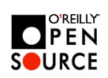

What is "Free Software"?
What is "Open Source"?
Free Software movement (GNU project) started in by Richard M. Stallman (RMS) in 1984 . (GNU is an abbreviation for "GNU is Not Unix").
Freedom in his (RMS) definition is freedom to run, copy, distribute, study, change and improve the software.
"Free software"' is a matter of liberty, not price. To understand the concept, you should think of "free speech"', not "free beer".
The software may be free regardless of the price, because users have freedom in using it.
The software may be non-free even if it is given away at no charge sometimes (if it is not free for users to change it, distribute it, etc.)
"Open Source" doesn't necessarily means freedom either (it only means that you can look at the code).
FSF (Free Software Foundation) provides several licenses:
• www.gnu.org/copyleft/gpl.html - GNU GPL (General Public License)
• www.gnu.org/copyleft/lesser.html - GNU Lesser (Library) GPL - allows non-free propriatary programs to use libraries and still stay non-free.
Different Open Source projects use various other licenses. Perl software, for example, may be distributed under either GNU GPL or Artistic License.
Read more at GNU central site:
• www.gnu.org
see also:
• www.gnu.org/philosophy/philosophy.html#LicensingFreeSoftware -
• www.gnu.org/philosophy/amazon.html - Boycott Amazon!
===============================
• www.linux.org - Linux
• www.linux.org - Linux (also see my Linux page - linux.html )
• www.gnome.org - Gnome desktop (Windows)
• www.perl.com - Perl (also seemy perl page - perl.html )
• www.apache.org - Apache project
• www.python.org - Python ( also www.pythonlabs.com )
• www.zope.org - Zope
• www.mozilla.org - Mozilla project
• www.bsd.org - BSD
• www.php.net - PHP
• www.sendmail.org - sendmail
• www.aolserver.com - AOL web server
• www.mysql.com - MySQL database
• www.opensource.org/ - Open Source Initiative (OSI)
www.opensource.org/halloween/ - The Halloween Documents
• sourceforge.net/ - SourceForge - a free service to Open Source developers offering easy access to the best in CVS, mailing lists, bug tracking, message boards/forums, task management, site hosting, permanent file archival, full backups, and total web-based administration.
• osdn.com/ - Open Source Development Network
• www.questionexchange.com - question exchange
• www.openmagazine.net - Open magazine
• conferences.oreilly.com/oscon2000/ - O'Reilly Open Source Convention (July, 2000)
• opensource.oreilly.com/ - O'Reilly Open Source website
• directory.google.com/Top/Computers/Open_Source/ - Open Source on Google.com
• dmoz.org/Computers/Programming/
Languages/Java/Open_Source/Java_Implementations/ - Open Source Java
• oingo.com/topic/83/83585.html - Java Open Source Application Servers
• oingo.com/topic/83/83584.html - Java Open Source Server-Side Code
• oingo.com/topic/11/11674.html - Open Source Java
• devseek.com/Programming/
Languages/Java/Open_Source/ - Open Source Java
• it.about.com/compute/it/msubos1.htm -some articles
• www.tuxedo.org/~esr/ - Eric Steven Raymond's Home Page
( www.tuxedo.org/~esr/writings/ - his writings)